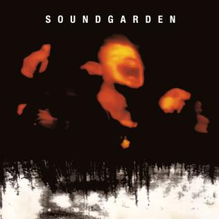

here you'll find a bunch of music and albums i like
to start, i have some recommended listening to get familiarised with my music taste
if you're into grunge (none of that post-grunge late 90s-2000s corny BS, though, sorry :p),
prog-rock, some electronic/ambient stuff, i think we'll get along great! :^]
rockers
distorted guitars + angry people screaming their heads off
soundgarden - superunknown (1994)

the best album from these guys usually boils down to either this album or badmotorfinger,
although i give that title to this one overall, i do think chris cornell's vocals peaked in b.m.f.
great mix of heavy, fast, and sometimes dreamy tracks.
chris shrieks like a maniac on some tracks here. if superunknown is more dark, heavy, and moody,
i think i'd call this one wild, manic, and speedy. this is the album where they finalized their
line up of chris, kim, ben, and matt (hiro yamamoto's bass playing is still great though, see ultramega ok!)
favourite tracks
slaves and bulldozers
room a thousand years wide
searching with my good eye closed (they opened their concerts with this in '95)
great odd-rhythm tunes, great riffs, great vocals.
a bit tedious with the 2 (i think?) instrumental interludes, but overall solid.
i don't know how danny carey comes up with the drum ideas on this album, crazy stuff.
after the opening track, this album actually cools down for most of its remaining run.
this is also their last album with jack irons on drums (matt cameron from soundgarden would take the spot later that year).
i think of this album as the barrier between old PJ and new PJ;
the end of their shift in musical style that started on 'vitalogy' (1993), they don't show as much aggression in their songs
after this point. anyway uhh... this album was also inspired by a book, 'ishmael' by daniel quinn,
i read it after i found out from an interview that the band read it while they were recording this album.
i give this album an 8/10 and the book a 9/10.